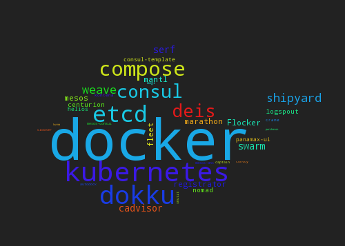
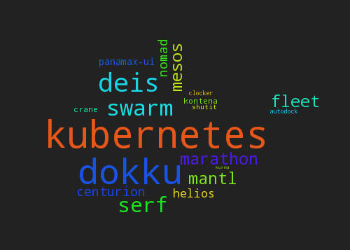

Mesos-Marathon cloud
do it yourself
Jan Seidl <seidl@avast.com>, VirusLab Systems
Docker?
Cloud?
Cloud of docker tooling
Cloud of docker orchestration tooling
Cloud?
swarm / helios / kubernetes (beta) / mesos-marathon
Mesos-Marathon cloud
mmcloud v1
- mesos
- marathon
- (zookeeper)
- haproxy
- ha-proxy bridge (cron)
service discovery
how to find application in cluster
node*:servicePort
↓
nodeX:hostPort
↓
( docker:containerPort )
- simple architecture
- tcp/udp applications
- polling
- adressing via ports
pluses
minuses
mmcloud v2
- mesos
- marathon
- (zookeeper)
- consul
- consul-template
- web-proxy (lighttpd)
- bind
- registrator
service discovery
how to find application in cluster
HTTP GET application.cloud.domain
↓
MASTER: reverse web proxy
↓
hostX:hostPort
↓
( docker:containerPort )
- immediate propagation (consul-template)
- HTTP/DNS API for service discovery
- only HTTP applications
- registrator must be installed on each node
- registrator uses docker name (collision with mesos/marathon id)
pluses
minuses
mmcloud v3 (current)
HA
- mesos
- marathon
- (zookeeper)
- consul
- consul-template
- web-proxy (lighttpd)
- bind
- mesos-marathon bridge
- logstash
- immediate propagation
- HTTP/DNS API for service discovery
- name is name of mesos/marathon id
- one instance of mesos-marathon bridge in cloud
- only HTTP applications
- multiport application problem
pluses
minuses
HA
-
virtual IP + VRRP
- keepalived
- piranha (RedHat)
- ultramonkey
- DCOS?

demo time
- new application via gui
- DNS API
marathon.json
{
"id": "/test/jenkins2",
"instances": 1,
"cpus": 1,
"mem": 1024,
"container": {
"docker": {
"type": "DOCKER",
"image": "jenkinsci/jenkins:2.0-beta-1",
"network": "BRIDGE",
"portMappings": [
{
"containerPort": 8080,
"hostPort": 0,
"protocol": "tcp",
"servicePort": 0
}
]
}
}
}
deployer
https://hub.docker.com/r/avastsoftware/marathon-deployer
docker run \
-v $PWD/marathon.json:/marathon.json \
-e MARATHON_URL=marathon.whale.int.avast.com \
-e MARATHON_APPLICATION_NAME=/test/application \
avastsoftware/marathon-deployer
Known problems
- logging
- no-HTTP applications
- monitoring
- authentication